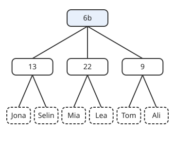

Das brauchst du hier
Mit einem KI-Tutor lernen
Ein KI-Tutor erklärt dir diese Seite und hilft dir bei den Aufgaben. Wähl deinen Assistenten:
Mit Claude öffnen Mit ChatGPT öffnen Mit Mistral Vibe öffnen
Du nutzt dein eigenes Konto beim Anbieter. Der Assistent ist kein Angebot von lernapps.net: lernapps liefert nur Inhalte und Aufgaben. Die Wahl gilt für alle Seiten, nur auf diesem Gerät.
In diesem Kapitel räumst du Mias Tablet auf. Dafür brauchst du vier Dinge, die du schon gelernt hast. Lies jeden Teil und frag dich: Kann ich das schon?
Bestandteile eines Computers
 © CC-BY-4.0
© CC-BY-4.0- Prozessor: rechnet
- Arbeitsspeicher: hält, woran gerade gearbeitet wird
- Festspeicher: hebt auf, auch ohne Strom. Hier liegen Mias Dateien.
Der gläserne Computer: ein Tablet aus Glas. Das orange Kästchen (3) ist der Festspeicher.
Kannst du das schon? Ich kann die wichtigsten Bestandteile eines Computers benennen und ihre Aufgaben beschreiben. Für dieses Kapitel ist einer wichtig: Was Mia speichert, liegt im Festspeicher. Dort bleibt es, auch wenn das Tablet aus ist.
Programme bedienen
Kannst du das schon? Ich kann Grundfunktionen von Programmen wie Öffnen, Speichern, Kopieren und Einfügen sicher nutzen.
- Speichern legt etwas in den Festspeicher.
- Ausschneiden merkt sich etwas, damit du es woanders hinlegen kannst.
- Einfügen legt es an einer neuen Stelle wieder hin.
In diesem Kapitel schneidest du Dateien aus und fügst sie in einem Ordner ein.
Baum als Datenstruktur

© CC-BY-4.0- Wurzel: der oberste Knoten
- Kante: eine Linie zwischen zwei Knoten
- Knoten: ein Kästchen im Baum
- Blatt: ein Knoten ohne Knoten darunter
Der Zimmerplan von Mias Klassenfahrt an den Seeberg: die Kinder der 6b, unter ihnen Mia und ihre Freunde Selin und Jona.
Kannst du das schon? Ich kann hierarchische Informationen als Baum mit Wurzel, Knoten, Kanten und Blättern darstellen. Mias Tablet wird gleich genauso ein Baum.
Bit und Byte
Kannst du das schon? Ich kann die Einheiten Bit, Byte, Kilobyte, Megabyte und Gigabyte erklären und Datenmengen damit vergleichen. Du brauchst sie auf der Seite „Speicherorte vergleichen“.
| Einheit | so viel |
|---|---|
| 1 Byte | 8 Bit |
| 1 Kilobyte (KB) | 1000 Byte |
| 1 Megabyte (MB) | 1000 Kilobyte |
| 1 Gigabyte (GB) | 1000 Megabyte |
Fehlt dir etwas davon? Dann schau zuerst auf der Seite des Bausteins nach, oben auf dieser Seite. Sonst geht es los: Mia sucht ihr Referat.
Fehler gefunden oder eine Idee für diese App?